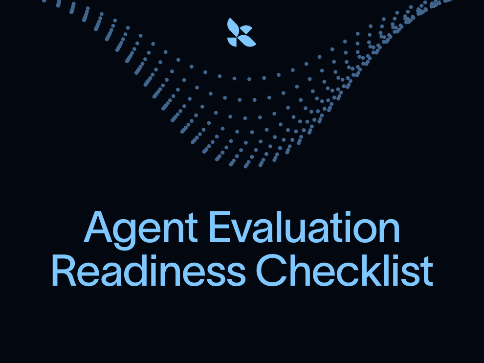

先找失败模式再扩数据集
文章把 error analysis 放在前面，避免没有行为目标就堆 eval cases。
Why：agent evaluation 和传统测试不同，需要先看运行轨迹、失败模式和行为目标；直接堆测试会得到脆弱信号。 What：文章给出 agent eval checklist，覆盖 error analysis、dataset construction、grader design、offline/online evals、iteration 和 production readiness。 How：先用少量 end-to-end eval 建 baseline，再从 traces 和人工分析构建数据集；grader 明确 rubric 和边界；offline eval 支持迭代，online eval 监控生产行为。
agent evaluation 和传统测试不同，需要先看运行轨迹、失败模式和行为目标；直接堆测试会得到脆弱信号。
文章给出 agent eval checklist，覆盖 error analysis、dataset construction、grader design、offline/online evals、iteration 和 production readiness。
先用少量 end-to-end eval 建 baseline，再从 traces 和人工分析构建数据集；grader 明确 rubric 和边界；offline eval 支持迭代，online eval 监控生产行为。

这份 checklist 的重点是 eval readiness，而不是一次性写完测试。它把 agent 评测拆成 error analysis、dataset、grader、运行迭代和生产 readiness：先拿到最简单但有信号的 end-to-end eval，再逐步把 traces、人工判断和线上监控接入。
文章把 error analysis 放在前面，避免没有行为目标就堆 eval cases。
grader 要有清晰 rubric、通过/失败边界和对误判的检查。
offline eval 用于迭代和回归测试，online eval 用于生产运行中的持续质量信号。
文章建议从几个 end-to-end eval 开始，只要能测试 agent 是否完成核心行为，就能立刻给出 baseline。
traces、用户反馈、失败样例和人工 review 帮助构造覆盖实际风险的数据集。
当 agent 进入生产，eval 不再只是本地实验；它要和 observability、alerts、regression tracking、human review 一起工作。


| 标题 | Agent Evaluation Readiness Checklist |
| 日期 | March 27, 2026 |
| 作者 | Victor Moreira |
| 阅读时间 | 22 min |
| 分类 | Observability & Evals, LangSmith |